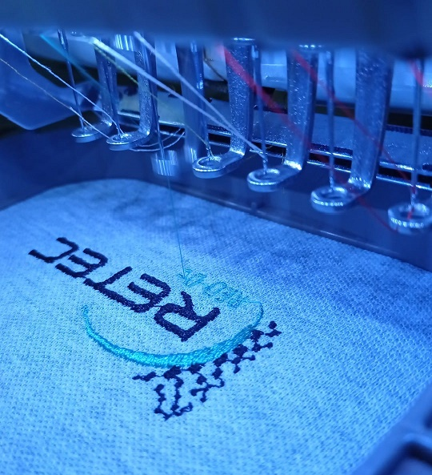
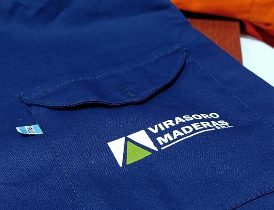
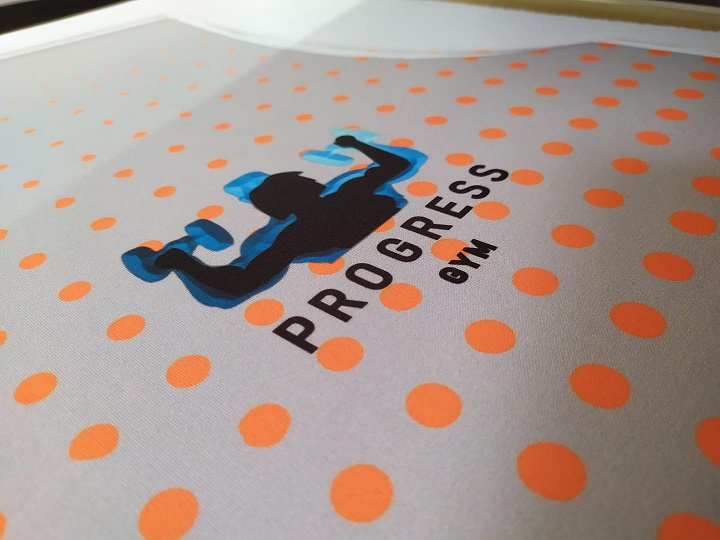

Bordados Industriales
Le permite desarrollar su Imagen Corporativa en cualquier prenda textil; es un método que se utiliza para personalizar prendas con excelente calidad; permite realizar personalizaciones sobre cualquier prenda, y ofrece una gran durabilidad.
Serigrafía
Es una técnica de impresión que permite estampar un tejido mediante el uso de tinta y una malla, que posibilita reproducir una imagen sobre distintas superficies.
Sublimación
Se trata de transferir un diseño a un objeto o tela a través de presión y calor. Este proceso funciona mejor cuando las telas son claras y de poliéster al 100%.